<!DOCTYPE html><html><head><meta charset="utf-8"><meta name="viewport" content="width=device-width, initial-scale=1, maximum-scale=1"><title>Analytic Board</title><link rel="stylesheet" type="text/css" href="bower_components/prism/themes/prism-tomorrow.css"><link rel="stylesheet" type="text/css" href="styles/main.css"></head></html><body><article><section class="gray"><div></div><div class="bt-right"></div></section><section class="green"><h1>Jaime Andrés García</h1><h2>CEO Ingenio Sólido - Analytic Board</h2><h2>Magister en Ingeniería Administrativa</h2><h2>Experto en Visualización de Datos y Toma de Decisiones</h2><h2>Correo: jaimegarcia@analyticboard.com</h2><h2>Celular: 300 269 96 53</h2></section><section class="adictos"><div class="tint"><h2>La tecnología se ha vuelto muy importante en nuestra vida y en nuestras organizaciones</h2></div></section><section class="blue"><h1>Constantemente nos enfretamos al reto seleccionar opciones tecnológicas</h1><h2>- Sistema de Gestión Administrativa</h2><h2>- Motor de Base de Datos</h2><h2>- Servidor de Infraestructura</h2><h2>- Un Proveedor Tecnológico</h2><h2>- Solución documental</h2></section><section class="complejo"><div class="tint"><h2>Sin embargo, el proceso se ha vuelto complejo</h2></div></section><section class="white"><h2>Incremento del número de opciones tecnológicas y su complejidad</h2>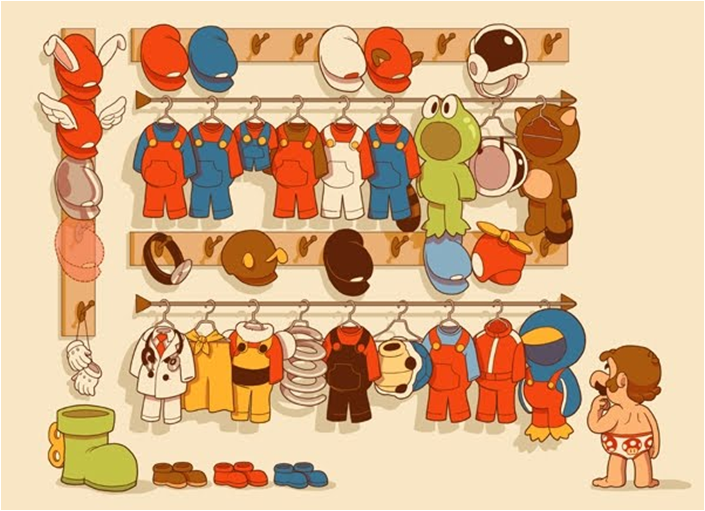</section><section class="light-gray"><h2>Nube de Alternativas de Software</h2><iframe src="iframes/index.html" scrolling="no" height="100%" width="100%" style="border:0px"></iframe></section><section class="white"><h2>Poca diferenciación entre algunas de las opciones</h2>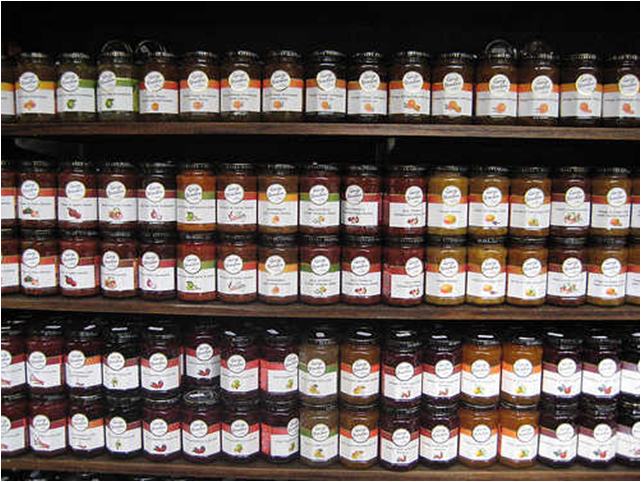</section><section class="white"><h2>Falta de claridad en las especificaciones</h2></section><section class="white"><h2>La información para la toma de decisiones es imprecisa e insuficiente</h2>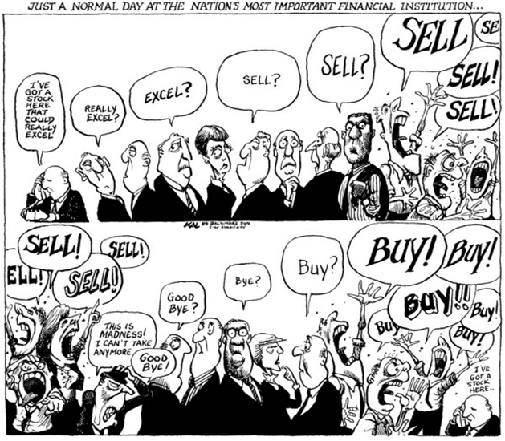</section><section class="white"><h2>Las personas que seleccionan la tecnología, lo hacen de forma subjetiva</h2></section><section class="white"><h2>Fanboys - Fangirls</h2>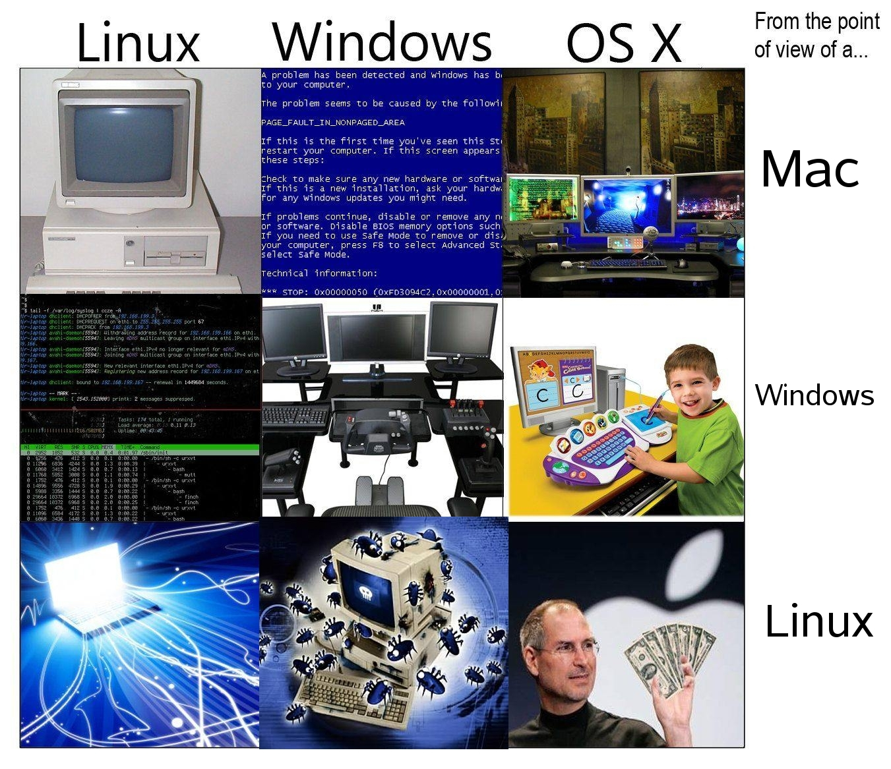</section><section class="white"><h2>Las tecnología está evolucionando constantemente</h2>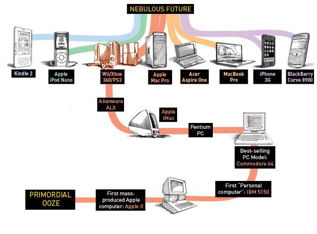</section><section class="light-gray"><h2>El caso HD DVD vs Blu-ray</h2><iframe src="iframes/hdvd-bluray.html" scrolling="no" height="100%" width="100%" style="border:0px"></iframe></section><section class="red"><h1>Problemas en el proceso de selección</h1><h2>- Número de opciones</h2><h2>- Diferenciación y entendimiento de las opciones</h2><h2>- Información insuficiente e imprecisa</h2><h2>- Subjetividad</h2><h2>- Evolución de la tecnología (Decisión dinámica)</h2></section><section class="red"><h1>Hay una solución para contrarrestar estos problemas ...</h1></section><section class="green"><h1>Pero antes de revisar la metodología, pongámonos de acuerdo en algunos conceptos</h1></section><section class="blue"><h1>Seleccionar Tecnología</h1><h2>Escoger la "mejor" tecnología dentro de un número de alternativas</h2><h2>Los criterios para considerar una tecnología "mejor" dependen de los decisores</h2></section><section class="blue"><h1>Historia de Usuario</h1><h2>Representación de una necesidad en el lenguaje del usuario</h2><h2>Como (rol) quiero (algo) para poder (beneficio)</h2></section><section class="white"><h1>Story Mapping (Jeff Patton)</h1>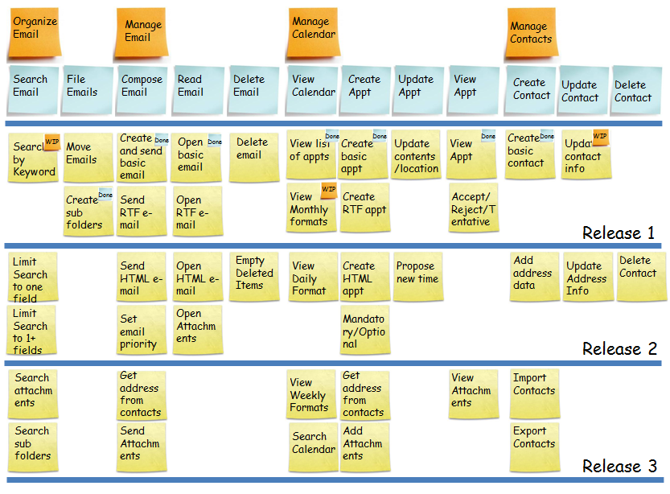</section><section class="white"><h2>Arquitectura Evolutiva</h2>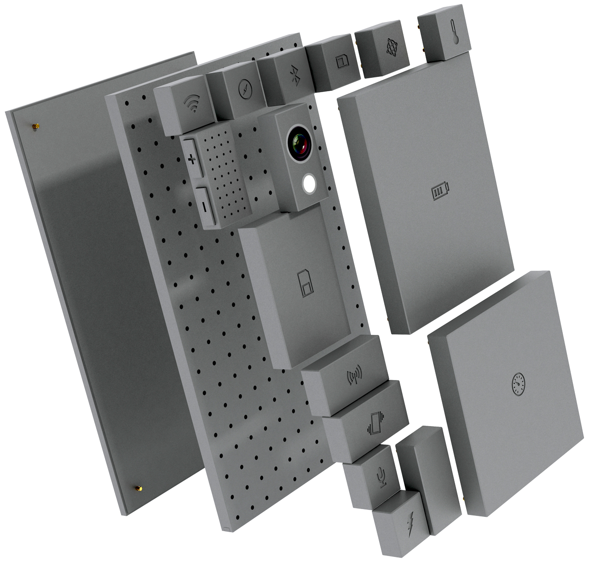</section><section class="white"><h2>Behaviour-Driven Development (Dan North)</h2></section><section class="white"><h2>Escenarios - BDD</h2>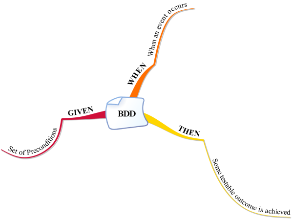</section><section class="white"><h2>Selección Ágil de Software</h2>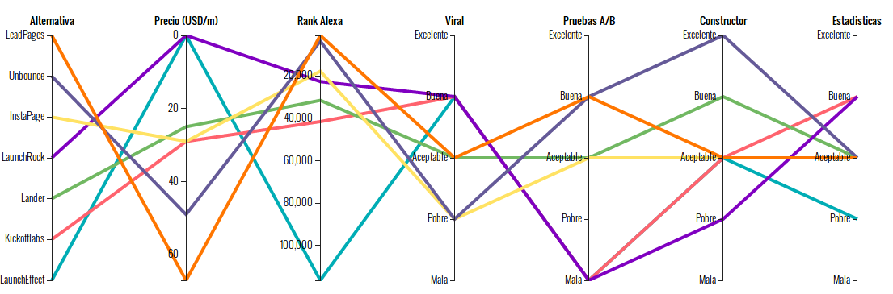</section><section class="green"><h1>Primero, ten en cuenta lo siguiente</h1><h2>- Te vas a equivocar</h2><h2>- Decide tan tarde como sea posible (Last Responsible moment)</h2><h2>- No te cases con una tecnología o si te casas adquiere compromiso con su desarrollo</h2></section><section class="white"><h2>2. Identifique las historias de usuario que debe satisfacer el software o librería</h2><h3>(Story Mapping - Backlog)</h3>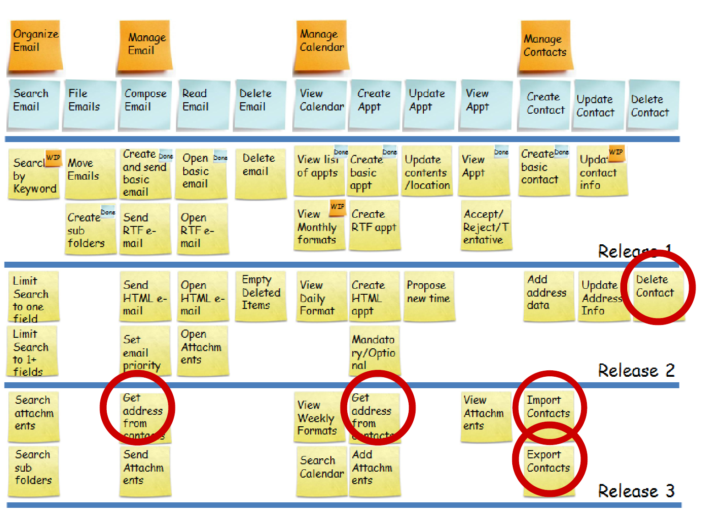</section><section class="blue"><h2>3. Determinar las historias de usuario y escenarios críticos  (Requísitos Mínimos)</h2><h2><br></h2><h2>4. Determinar funcionalidades y características deseables (Criterios Flexibles)</h2></section><section class="white"><h2>5.BDD en Requisitos Mínimos</h2>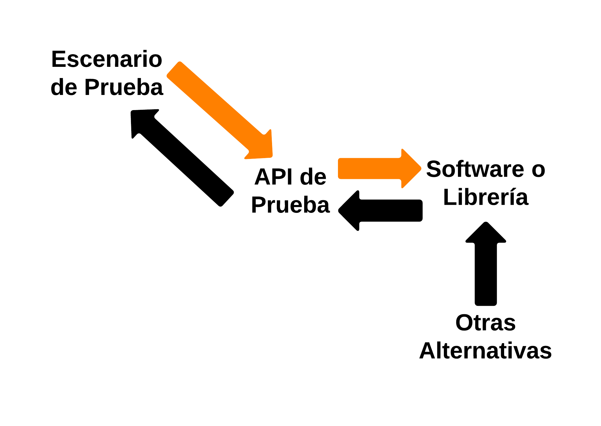</section><section class="white"><h2>6. Método Interactivo Criterios Flexibles</h2><iframe src="iframes/par-coord-tech-select-es/index.html" scrolling="no" height="100%" width="100%" style="border:0px"></iframe></section><section class="blue"><h1>7.Ante un cambio tecnológico, se aplican todos los escenarios de BDD y se Actualiza el Método interactivo</h1></section><section class="life"><div class="tint"><h1>Analytic Board</h1><h2>Dele Vida a su Conocimiento</h2><h2>Gracias por su atención</h2></div></section></article><script src="bower_components/bespoke.js/dist/bespoke.min.js"></script><script src="bower_components/bespoke-bullets/dist/bespoke-bullets.min.js"></script><script src="bower_components/bespoke-scale/dist/bespoke-scale.min.js"></script><script src="bower_components/bespoke-hash/dist/bespoke-hash.min.js"></script><script src="bower_components/bespoke-progress/dist/bespoke-progress.min.js"></script><script src="bower_components/bespoke-state/dist/bespoke-state.min.js"></script><script src="bower_components/bespoke-forms/dist/bespoke-forms.min.js"></script><script src="bower_components/prism/prism.js"></script><script src="scripts/main.js"></script></body>